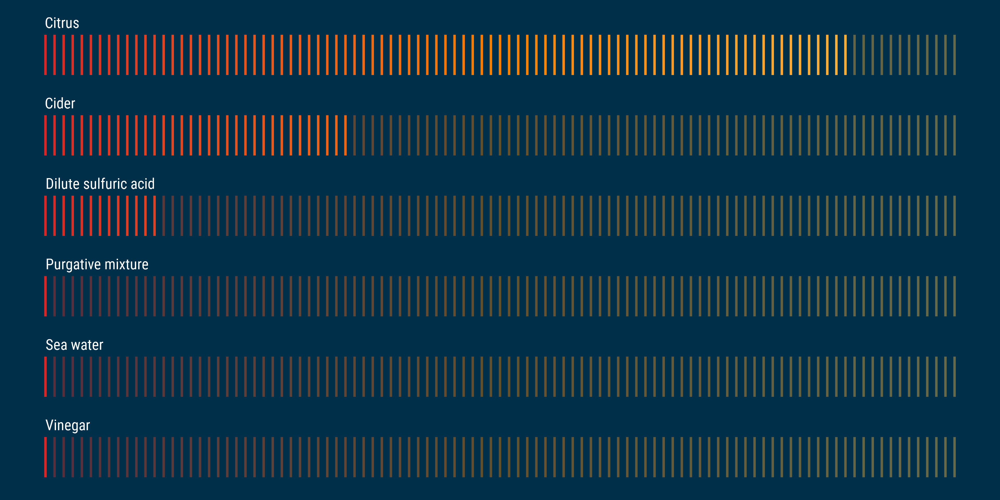
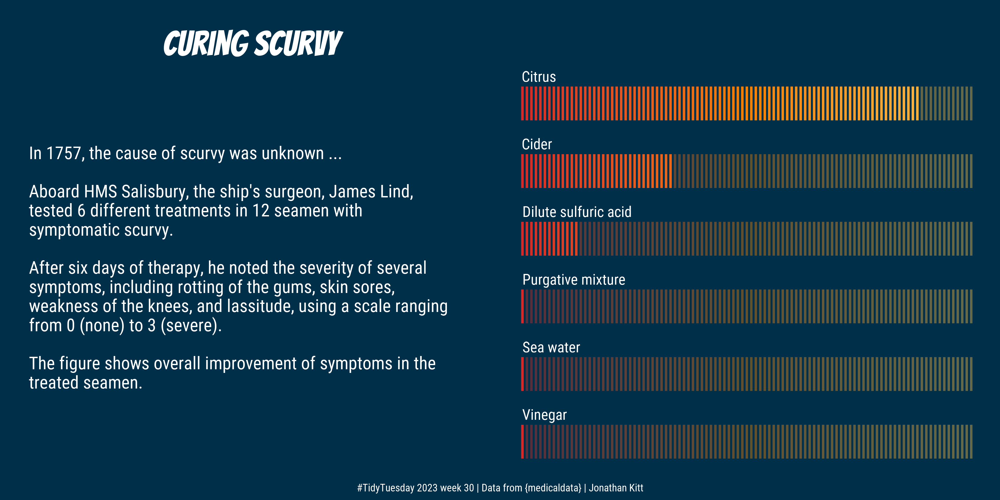

# Load the packages
library(tidyverse)
library(showtext)
library(patchwork)Introduction
The #TidyTuesday weekly challenge is organised by the R4DS (R for Data Science) Online Learning Community.
Every tuesday throughout the year, participants work on a common dataset and share the plots they create.
The dataset for this challenge comes from the {medicaldata} R package.
Getting the data
First of all, let’s load the packages we’ll be using :
{tidyverse} to clean the data and create the plots
{showtext} to change the fonts used
{patchwork} to assemble the plots
If you don’t have these packages installed, simply use the install.packages() function.
We also load the fonts we will use in the plots: Roboto Condensed for the text and Bangers for the title.
# Import the fonts
font_add_google("Roboto Condensed", "Roboto Condensed")
font_add_google("Bangers", "Bangers")
showtext_auto()We can now download the dataset :
# Download the dataset
scurvy <- readr::read_csv("https://raw.githubusercontent.com/rfordatascience/tidytuesday/master/data/2023/2023-07-25/scurvy.csv")For a quick overview of the data, we use the glimpse() function from the {dplyr} package:
# Explore the dataset
glimpse(scurvy)Rows: 12
Columns: 8
$ study_id <dbl> 1, 2, 3, 4, 5, 6, 7, 8, 9, 10, 11, 12
$ treatment <chr> "cider", "cider", "dilute_sulfuric_acid", "d…
$ dosing_regimen_for_scurvy <chr> "1 quart per day", "1 quart per day", "25 dr…
$ gum_rot_d6 <chr> "2_moderate", "2_moderate", "1_mild", "2_mod…
$ skin_sores_d6 <chr> "2_moderate", "1_mild", "3_severe", "3_sever…
$ weakness_of_the_knees_d6 <chr> "2_moderate", "2_moderate", "3_severe", "3_s…
$ lassitude_d6 <chr> "2_moderate", "3_severe", "3_severe", "3_sev…
$ fit_for_duty_d6 <chr> "0_no", "0_no", "0_no", "0_no", "0_no", "0_n…The dataset has 12 observations (rows) and 8 variables (columns).
Each row represents a seaman with scurvy symptoms.
Six treatments were tested (citrus, cider, dilute sulfuric acid, purgative mixture, sea water and vinegar) and four symptoms evaluated (rotting of the gums, skin sores, weakness of the knees and lassitude).
Cleaning the data
We use the following code to clean the data:
scurvy_clean <- scurvy |>
# remove dosing regimen column
select(-dosing_regimen_for_scurvy) |>
# transform from wide to long format
pivot_longer(cols = gum_rot_d6:fit_for_duty_d6,
names_to = "item",
values_to = "value") |>
# separate "value" column into "score" + "grade"
separate(col = value,
into = c("score", "grade"),
convert = TRUE) |>
# remove "_d6" suffix in item column
# replace "_" with white spaces
# transform character strings into sentences
mutate(item = str_remove_all(item, "_d6"),
across(treatment:item, ~str_replace_all(., pattern = "_", replacement = " ")),
across(c(treatment, item, grade), ~str_to_sentence(.))) |>
# transform study_id into factor
# arrange factor levels by order of appearance
mutate(study_id = fct_inseq(as_factor(study_id)),
across(treatment:item, ~fct_inorder(.)))
# View first lines of cleaned data
head(scurvy_clean)# A tibble: 6 × 5
study_id treatment item score grade
<fct> <fct> <fct> <int> <chr>
1 1 Cider Gum rot 2 Moderate
2 1 Cider Skin sores 2 Moderate
3 1 Cider Weakness of the knees 2 Moderate
4 1 Cider Lassitude 2 Moderate
5 1 Cider Fit for duty 0 No
6 2 Cider Gum rot 2 ModerateWe calculate an “overall improvement score” using the code below:
overall_improvement <- scurvy_clean |>
# remove "Fit for duty" column
filter(item != "Fit for duty") |>
# calculate total score by treatment
summarise(total = sum(score),
.by = treatment) |>
# calculate overall improvement score as %
mutate(improvement_score = 100 * (24-total) / 24) |>
# arrange data by increasing improvement score
arrange(improvement_score)
# View table
overall_improvement# A tibble: 6 × 3
treatment total improvement_score
<fct> <int> <dbl>
1 Vinegar 24 0
2 Sea water 24 0
3 Purgative mixture 24 0
4 Dilute sulfuric acid 21 12.5
5 Cider 16 33.3
6 Citrus 3 87.5Creating the plots
Text
First we create a table for the text to be displayed:
# Create table with text and x/y positions for plot
p_text <- tibble(
x = 0,
y = c(6, 4:2, 0:-3, -5, -6),
text = c("In 1757, the cause of scurvy was unknown ...",
"Aboard HMS Salisbury, the ship's surgeon, James Lind,",
"tested 6 different treatments in 12 seamen with",
"symptomatic scurvy.",
"After six days of therapy, he noted the severity of several",
"symptoms, including rotting of the gums, skin sores,",
"weakness of the knees, and lassitude, using a scale ranging",
"from 0 (none) to 3 (severe).",
"The figure shows overall improvement of symptoms in the",
"treated seamen."
)
)We then create a first plot with the text:
# Create p0 plot with text
p0 <- ggplot() +
geom_text(data = p_text,
aes(x = x, y = y, label = text),
family = "Roboto Condensed", colour = "white", hjust = 0, size = 18) +
xlim(0, 10) +
ylim(-10, 10) +
labs(title = "Curing scurvy") +
theme_void() +
theme(panel.background = element_rect(fill = "#003049", color = "#003049"),
plot.background = element_rect(fill = "#003049", color = "#003049"),
plot.title = element_text(family = "Bangers", colour = "white",
size = 100, hjust = 0.5, margin = margin(t = 20)))Improvement scores
We represent the overall improvement scores as percentages using coloured bars.
First, we create data points to draw bars ranging from 0 to 100:
# Create data points to draw bars from 0 to 100
p1_bars <- overall_improvement |>
# keep treatment column
select(treatment) |>
# add a row id column named "y"
rowid_to_column(var = "y") |>
# repeat each row 101 times (0 to 100)
slice(rep(1:n(), each = 101)) |>
# add a column with positions to draw bars (for each of the 6 treatments)
mutate(x = rep(0:100, times = 6))Then we create data points to represent the actual improvement scores:
# Create data points to draw bars for improvement scores
p1_values <- overall_improvement |>
# round improvement score %
mutate(improvement_score = round(improvement_score)) |>
# select treatment + improvement score columns
select(treatment, improvement_score) |>
# join p1_bars to get positions for bars from 0 to score
left_join(p1_bars) |>
# extract max score for each treatment
mutate(max_score = max(improvement_score),
.by = treatment) |>
# remove rows when x > max_score
filter(x <= max_score) |>
# order columns
select(y, treatment, x)Finally, we create the plot:
# Create data points to draw bars for improvement scores
p1 <- ggplot() +
geom_segment(data = p1_bars,
aes(x = x, xend = x,
y = y - 0.25, yend = y + 0.25,
colour = x),
linewidth = 1, alpha = 0.4,
show.legend = FALSE) +
geom_segment(data = p1_values,
aes(x = x, xend = x,
y = y - 0.25, yend = y + 0.25,
colour = x),
linewidth = 1,
show.legend = FALSE) +
geom_text(data = p1_values |> distinct(y, treatment),
aes(x = 0, y = y + 0.4, label = treatment),
size = 15, colour = "white", hjust = 0,
family = "Roboto Condensed") +
scale_colour_gradient2(low = "#d62828", mid = "#f77f00", high = "#fcbf49",
midpoint = 50) +
theme_void() +
theme(panel.background = element_rect(fill = "#003049", color = "#003049"),
plot.background = element_rect(fill = "#003049", color = "#003049"))
Assembling the plots
We use the {patchwork} package to assemble the two plots, add some caption text, and export to .png format:
# Assemble the two plots
p <- p0 + p1 +
plot_annotation(
caption = "#TidyTuesday 2023 week 30 | Data from {medicaldata} | Jonathan Kitt",
theme = theme(
panel.background = element_rect(fill = "#003049", color = "#003049"),
plot.background = element_rect(fill = "#003049", color = "#003049"),
plot.caption = element_text(colour = "white", hjust = 0.5, size = 30,
family = "Roboto Condensed")
)
)
# Export to png
ggsave("figs/tt_2023_w30_scurvy.png", p, dpi = 320, width = 12, height = 6)And here’s the result!
